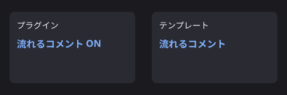
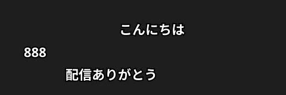
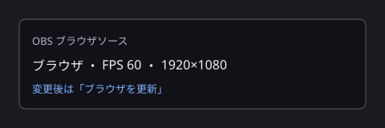

流れるコメント 使い方
わんコメのコメントを、画面の右から左へ流して表示します。設定は入力を止めると自動で保存されます。
1. 準備

- わんコメの設定 → プラグインで「流れるコメント」を有効にする
- わんコメの設定 → テンプレートで「流れるコメント」を選ぶ
- 設定画面はプラグインのリンクから開く
2. 見た目を変える

- プレビューで文字サイズ・色・レーンを確認する
- 値を変えると約 0.5 秒後に自動保存され、配信側にも反映される
- 「初期値に戻す」で出荷時の設定に戻る
3. OBS に出す

- OBS に「ブラウザ」ソースを追加し、わんコメの配信画面 URL を指定する
- プロパティの「FPS」を 60 にする（既定は 30）
- 幅と高さは配信と同じにする（例: 1920×1080）
- 設定を変えたあとは、ソースを右クリックして「ブラウザを更新」する